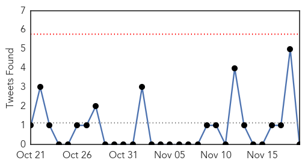
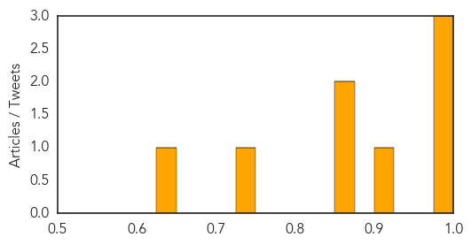
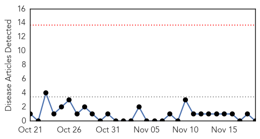
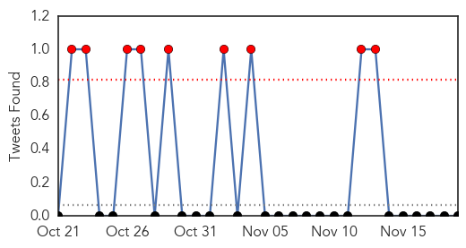

Cholera
30-Day Web Trend
3 alerts, 1 warnings

30-Day Twitter Trend
1 alerts, 0 warnings

Article Locations

Article Confidences
Top Articles:
- 0.995
- Ignoring the plight of the poor in Haiti
- 0.995
- Kilimanjaro steps up measures against cholera - United Republic of Tanzania
- 0.976
- HAITIAN-TRUTH.ORG Proud to be Haiti's most informative NEWS site
- 0.913
- How simple toilets and sanitation are saving lives in South Sudan
- 0.863
- The Broadband Revolution is Just a Fiber Away
- 0.853
- Médecins Sans Frontières (MSF) International
- 0.737
- Bahrain free from cholera, reaffirms health ministry official
- 0.636
- World Toilet Day: Public health at risk from poor hygiene, sanitation
Top Tweets:
-
No tweets found for Nov 19, 2015
MERS
30-Day Web Trend
0 alerts, 0 warnings

30-Day Twitter Trend
2 alerts, 2 warnings

Article Locations

Article Confidences

Top Articles:
-
No articles found for Nov 19, 2015
Top Tweets:
-
No tweets found for Nov 19, 2015